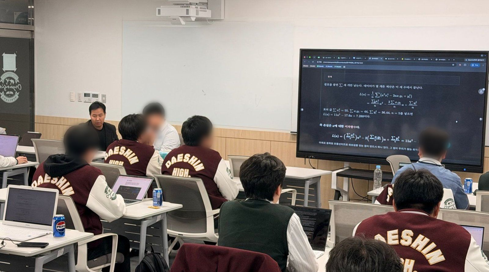
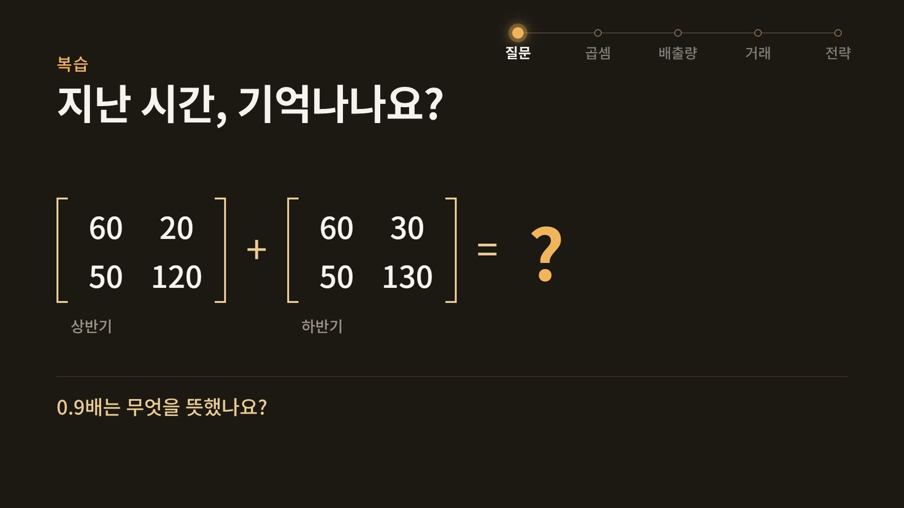
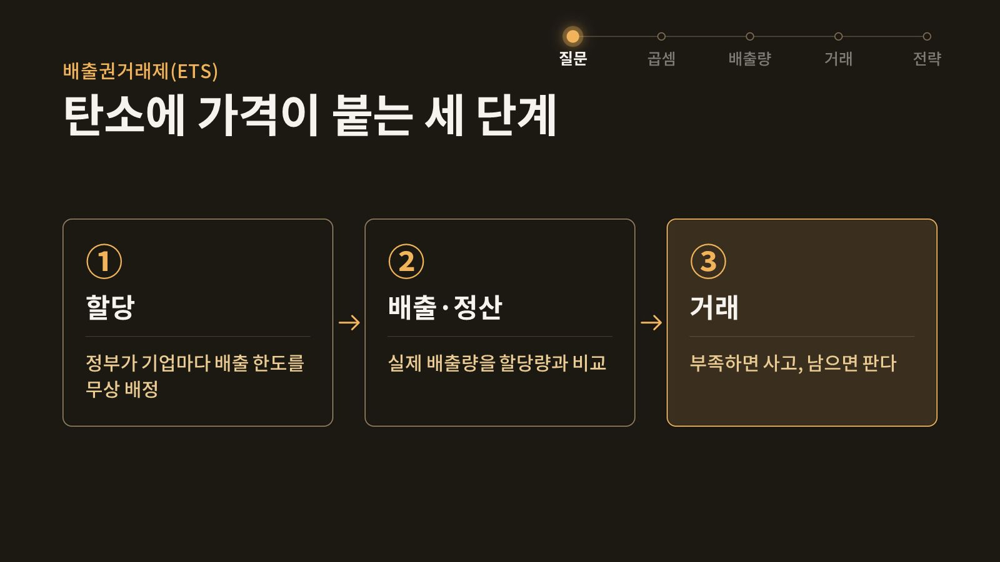
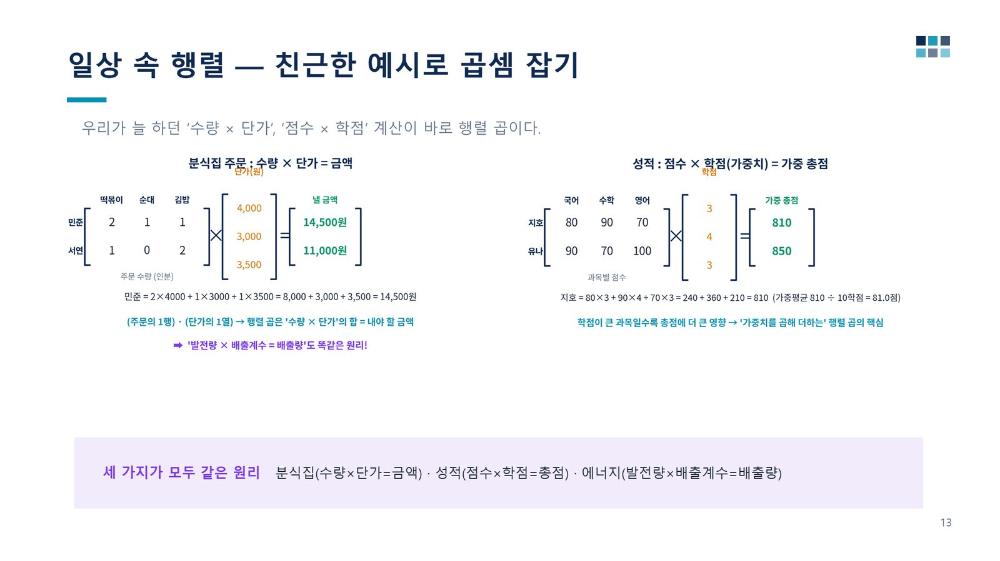
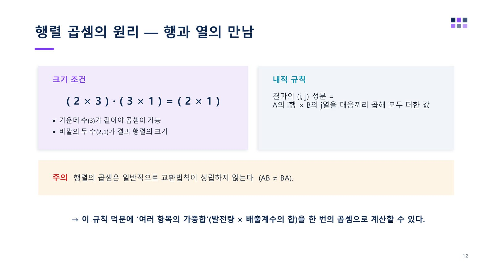
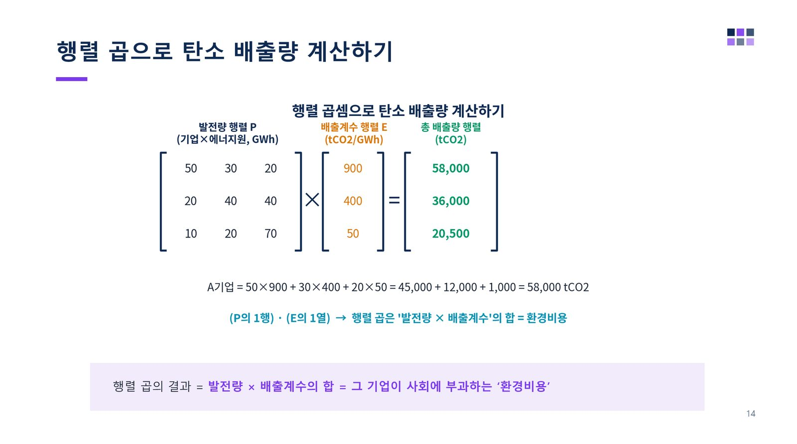
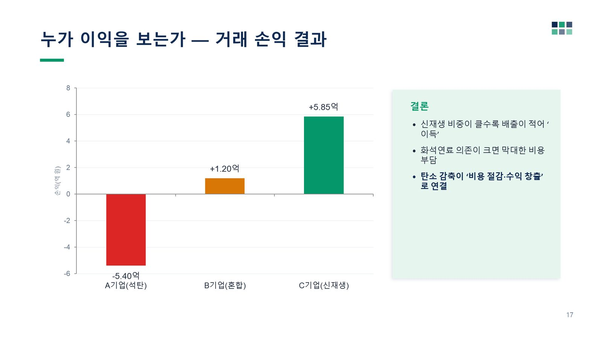
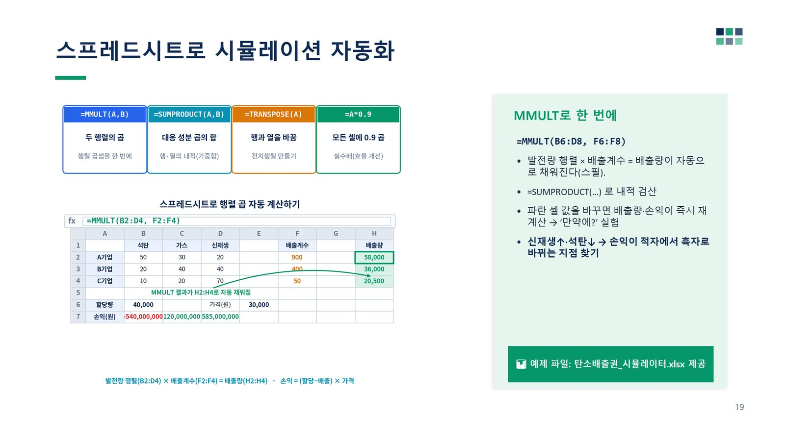
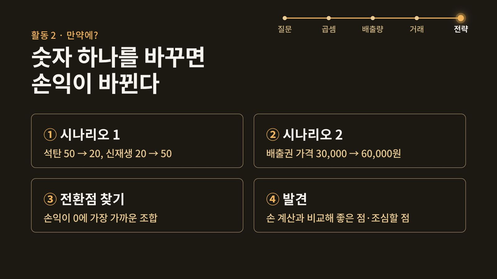
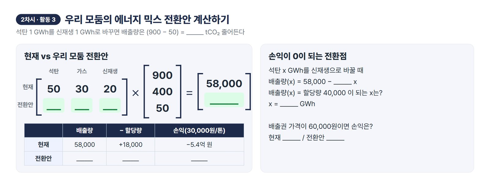

행렬의 곱,
탄소의 값을 매기다
오늘의 목표행렬의 곱셈을 수행하여 탄소 배출량을 정량적으로 예측하고, 그 결과를 탄소배출권 거래제(ETS)의 경제 맥락에서 해석할 수 있다.

수업 흐름
지도안은 45분 기준이에요. 50분 수업이면 남는 5분을 활동 4에 더해 13분으로 해요. 자기·동료 평가는 과제 제출 뒤 다음 수업 도입 10분(차시 외)에 해요.
지난 시간, 기억나나요?
정답 보기

탄소를 배출하면
돈을 내야 한다?
· 오늘 시세와 수업의 30,000원/톤은 다를 수 있으며, 30,000원은 계산을 쉽게 하려고 정한 교육용 가정값임을 먼저 안내. EU 배출권은 국내 배출권보다 몇 배 비싸므로 60,000원 시나리오는 ‘국내 탄소 가격이 크게 오를 때’로 설명
· 시간: 지도안은 45분(도입 8 · 전개 34 · 정리 3) 기준. 50분 수업이면 남는 5분을 활동 4에 더해 13분으로
배출권거래제(ETS) — 탄소에 가격이 붙는 세 단계
오늘의 질문: 행렬의 곱으로 우리 기업의 탄소 비용을 어떻게 계산할까?

목표: 행렬의 곱셈을 수행하여 탄소 배출량을 예측하고, 그 결과를 배출권 거래 손익으로 해석한다. · 흐름: 곱의 원리(분식집·성적) → 배출량 = 발전량 × 배출계수 → 할당량 비교 → 거래 손익
· 수업 모델은 계산을 쉽게 하려고 할당량 전부를 무상으로, 세 기업 모두 40,000 tCO₂로 같다고 가정함. 실제 발전 부문은 발전량 기반 벤치마크로 할당하고, 제4차 계획기간(2026~2030)에는 유상(경매) 비율이 2026년 15%에서 2030년 50%까지 오름(환경부 「제4차 배출권거래제 기본계획」 2024. 12.) — 유상 비율이 오르면 탄소 비용이 발전 원가·전기요금으로 이어짐을 덧붙임
‘수량 × 단가’가
이미 행렬 곱이에요
분식집에서 민준이가 주문한 금액은?
정답 보기

· 분식집 정답: 2×4,000 + 1×3,000 + 1×3,500 = 14,500원
가운데 수가 같아야 곱할 수 있다

- 결과의 (i, j) 성분 = 앞 행렬의 i행 × 뒤 행렬의 j열을 대응끼리 곱해 모두 더한 값
- (m × n)·(n × p) = (m × p) — 바깥 두 수가 결과의 크기
- AB ≠ BA — 곱하는 순서를 바꾸면 일반적으로 답이 달라져요
· E·P 프리셋으로 “EP는 계산할 수 있나요?”(활동지 ② 활동 1 ②) 발문
발전량 × 배출계수 = 배출량
A기업 = 50×900 + 30×400 + 20×50 = 45,000 + 12,000 + 1,000 = 58,000 tCO₂
B·C기업 정답
C = 10×900 + 20×400 + 70×50 = 9,000 + 8,000 + 3,500 = 20,500
PE의 성분은 무엇을 뜻할까?

※ 3×3 · 3×1 행렬의 곱은 공통수학1 교육과정 범위(행·열 각 2 이하)를 넘는 확장 활동이에요. A기업 한 줄만 손으로 계산하고, 나머지는 짝 검산과 스프레드시트로 확인해요.
· 단위(GWh, tCO₂/GWh) 점검
· 배출계수는 대소관계만 실제와 같게 단순화한 교육용 값. 석탄 900·가스 400은 연소(직접) 배출 수준, 신재생 50은 전과정 어림값이라 기준이 섞여 있음(교육용). 참고: IPCC AR5 전과정 중앙값 석탄 820 · 가스복합 490 · 태양광 41~48 · 풍력 11~12 gCO₂/kWh(= tCO₂/GWh). 실제 배출권거래제에서는 태양광·풍력의 직접 배출을 0으로 봄
부호가 기업의 운명을 가른다
A 초과 → 배출권 구매 · B 잉여 → 판매 · C 잉여 → 판매 (세 기업 할당량이 같다고 가정)
정답 보기

· 오늘 시세를 보여 주고 “가격이 두 배가 되면?” 예측
· 결론: 세 기업 할당량이 같다고 가정했을 때 신재생 비중이 클수록 이득, 화석연료 의존이 크면 큰 비용
· 실제로는 남은 배출권을 다음 해로 이월하거나, 모자란 양을 상쇄배출권으로 일부 메울 수도 있음
=MMULT 한 줄이면 끝
=MMULT(B6:D8, F6:F8)
3×3 발전량 범위 × 3×1 배출계수 범위 → 3×1 배출량이 H6:H8에 펼쳐져요. (구형 엑셀은 Ctrl+Shift+Enter)
검산: =B6*F6+C6*F7+D6*F8
파란 글씨 셀만 바꾸고, 배출량 셀(H6:H8)과 손익 셀의 수식은 지우지 않아요. 구글 시트와 엑셀 파일은 내용이 같아요.

· 구글 계정이 없으면 실험실 ④(거래 손익)·⑤(전환점)로 대체 — 실험실은 같은 사이트 안에 있어 계정 없이 열림. ①~③을 실험실에서 하고 활동지 ②의 수식 칸(②)은 판서로 함께 확인
· 50분 수업이면 남는 5분을 활동 4에 더해 13분으로. 시간이 부족하면 ①·②만 하고 ③ 전환점은 실험실 ⑤로 함께 확인
· 수업 수치는 개념 이해를 위한 교육용 단순화 값임을 안내
숫자 하나를 바꾸면
손익이 바뀐다
- ①시나리오 1 — A기업 석탄 50→20, 신재생 20→50 (B6·D6 셀)
- ②시나리오 2 — 배출권 가격 30,000→60,000원 (D12 셀)
- ③전환점 찾기 — 손익이 0에 가장 가까운 석탄·신재생 조합(1 GWh 단위)
- ④발견 — 손 계산과 비교해 좋은 점·조심할 점

①·② 정답
② 60,000원일 때 처음 값 그대로: A기업 −10.8억 원, C기업 +11.7억 원 → 신재생 비중이 큰 기업이 더 유리해져요.
· 바꾼 값은 다음 시나리오 전에 처음 값으로 되돌리기
어디서 손익이 0이 될까?
- A기업 발전량
- 배출량
- PE − Q
- 손익
정답 보기
58,000 − 850x = 40,000 → x = 18,000 ÷ 850 ≈ 21.2
1 GWh 단위로 손익이 0에 가장 가까운 조합: 석탄 29 · 신재생 41 (x = 21)
· 가격 60,000원이면 전환의 가치가 더 커짐을 확인
작은 숫자 배열이
에너지의 미래를 정한다
행렬 곱의 결과가 기업의 경제적 이해득실을 결정해요. 수학 → 환경 → 경제의 연결을 돌아봐요.
· 활동 2는 ①~④ 필수, ⑤·⑥ 심화
활동지 ②
탄소의 값을 계산하라
적은 내용은 이 기기의 브라우저에만 저장돼요. 종이 활동지를 쓰는 반은 계산을 종이에 써도 돼요.
1기업별 배출량과 거래 손익
| 기업 | 배출량 PE (tCO₂) | PE − Q | 초과/잉여 | 손익 (원) |
|---|---|---|---|---|
| A | ||||
| B | ||||
| C |
2시뮬레이터 기록
활동 3 · 과제
우리 A기업 탄소중립 전략 계산기

전체 발전량 100 GWh는 유지해요. 석탄·가스를 정하면 신재생이 자동으로 맞춰져요. (배출계수 석탄 900 · 가스 400 · 신재생 50 tCO₂/GWh, 할당량 40,000 tCO₂)
합계 100 GWh
계산기가 채우는 것은 숫자뿐이에요. 이유·가치·빠진 조건은 아래 칸에 우리 모둠이 직접 써요.
동료 평가: 수치 근거가 있다 · 한계를 인정했다 · 실현 가능하다
이 차시 슬라이드
수업 PPT 30~59장. 슬라이드는 처음 만든 어두운 판 그대로예요.
나가기 질문 · 최종 성찰
덧셈·실수배·곱셈은 에너지 데이터에서 각각 무엇을 뜻했나요? 수학은 환경·경제 문제에서 어떤 역할을 할까요?